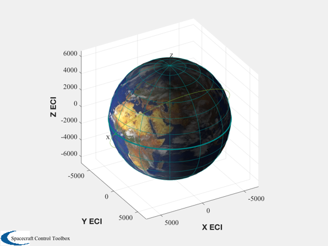
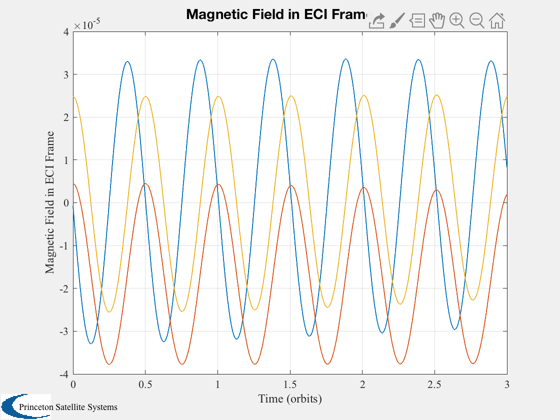
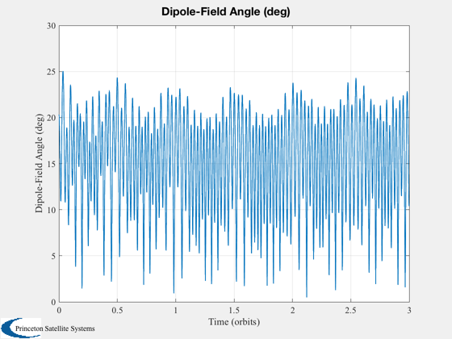
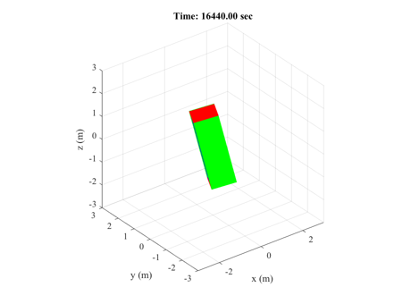
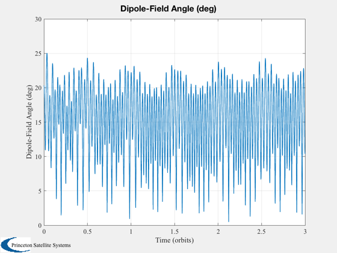
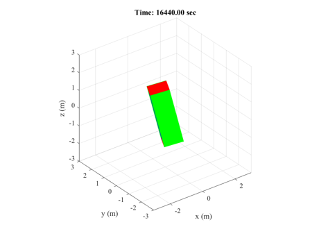

Simulate the attitude of a rigid spacecraft with permanent magnet in LEO
Demonstrates how the magnet dipole aligns with the Earth magnetic field over time. Depending on the orbit inclination and altitude, the field strength and direction undergoes a periodic change throughout the orbit. The magnetic field varies at twice orbit rate as shown in the plot.
The resulting motion is an undamped oscillation. The natural frequency of the oscillation changes with the square root of the inertia. The simulation includes gravity gradient torque as well.
See also QLVLH, InertiaCubeSat, PermanentMagnetRHS, El2RV, OrbRate, Period, PltOrbit, RVFromKepler, BDipole, Constant, AnimateCube, Plot2D, Mat2Q, Q2Mat, Date2JD, Mat2Eul, Dot, Unit
Contents
%------------------------------------------------------------------------------- % Copyright 2011 Princeton Satellite Systems, Inc. All rights reserved. %------------------------------------------------------------------------------- % Since version 10. %-------------------------------------------------------------------------------
User inputs
Alter these to quickly vary the simulation results. Factor the inertia up / down to see effect on frequency. Change the orbit altitude or inclination; dial up or down the magnetic dipole.
factor = 1; dipole = 0.05; % A-m^2 sma = 6728.14; % semi-major axis of orbit inc = 50*pi/180; % inclination of orbit
Initial conditions
%-------------------- nOrbits = 3; el = [6728.14, inc, 0, 0, 0, 0]; jD0 = Date2JD([2014, 3, 1, 0, 0, 0]); PltOrbit(el,jD0); t = 0 : 5 : Period(el(1))*nOrbits; [r,v] = El2RV(el); qEL = QLVLH(r,v); q0 = qEL; nRef = OrbRate(el(1)); w0 = [0;-nRef;0]; inertia = InertiaCubeSat( '3u', 2.8 ); inertia = inertia * factor; d = struct; d.mu = Constant('mu earth'); d.jD0 = jD0; d.t = t; [d.r,d.v] = RVFromKepler(el,t); d.inertia = inertia; d.dipole = -[cos(el(2));-sin(el(2));0]*dipole; nt = length(d.t); x = [q0;w0]; % Initialize fields for storing data from simulation %--------------------------------------------------- d.T = Period(el(1)); d.qEB = zeros(4,nt); d.wB = zeros(3,nt); d.wBDot = zeros(3,nt); d.torque = zeros(3,nt); d.bFBody = zeros(3,nt); d.euler = zeros(3,nt); d.qLB = zeros(4,nt); j = 1; d.qEB(:,j) = q0; d.wB(:,j) = w0; [xDot,d.torque(:,j),d.bFBody(:,j)] = PermanentMagnetRHS(x,0,d); d.wBDot(:,j) = xDot(5:7); matEL = Q2Mat( QLVLH(d.r(:,j),d.v(:,j)) ); matEB = Q2Mat( d.qEB(:,j) ); matLB = matEB * matEL'; d.euler(:,j) = Mat2Eul(matLB); d.qLB(:,j) = Mat2Q(matLB);
Run Simulation
%---------------- opts = odeset('abstol',1e-8,'reltol',1e-8); rhs = @(t,x) PermanentMagnetRHS(x,t,d); [t,y] = ode45( rhs, t, x, opts ); % Compute state derivatives, torque, magnetic field %-------------------------------------------------- for j=1:nt d.qEB(:,j) = y(j,1:4)'; d.wB(:,j) = y(j,5:7)'; [xDot,d.torque(:,j),d.bFBody(:,j)] = PermanentMagnetRHS(y(j,:)',t(j),d); d.wBDot(:,j) = xDot(5:7); matEL = Q2Mat( QLVLH(d.r(:,j),d.v(:,j)) ); matEB = Q2Mat( d.qEB(:,j) ); matLB = matEB * matEL'; d.euler(:,j) = Mat2Eul(matLB); d.qLB(:,j) = Mat2Q(matLB); end
Plots
%------- angle = acos(Dot(Unit(d.bFBody),Unit(-d.dipole))); Plot2D(d.t/d.T,BDipole(d.r,jD0+t/86400),'Time (orbits)','Magnetic Field in ECI Frame'); Plot2D(d.t/d.T,d.euler*180/pi,'Time (orbits)','Euler Angles (deg)'); Plot2D(d.t/d.T,angle*180/pi, 'Time (orbits)','Dipole-Field Angle (deg)') AnimateCube('run',[1 1 3],[d.qLB(:,1:12:end);d.t(1:12:end)]) %--------------------------------------
ans =
'AnimateCube36 34.7111 67.8735'
   
 